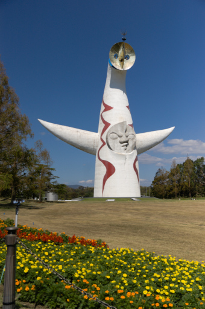
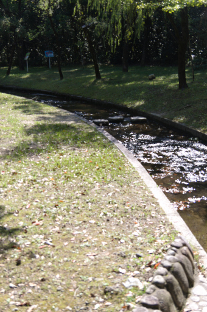
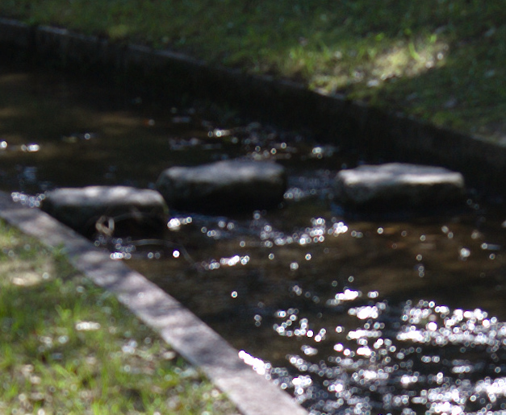
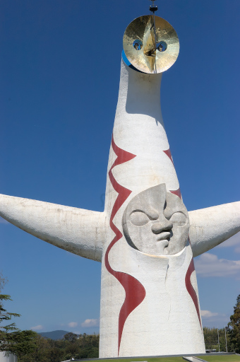
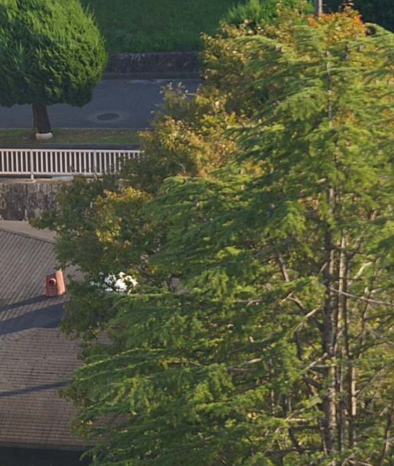

ただし国土地理院の地図などコンテンツの一部は除きます。
ただし国土地理院の地図などコンテンツの一部は除きます。すでに記事の該当部分は消してしまったのですが 3 日の記事でレンズがバリフォーカルレンズであるにもかかわらずピントを合わせ直すのを忘れてしまいピントが合わない写真を撮ってしまったと書きました。それはまったくの記憶違いでした。私はちゃんとオートフォーカスでピントを合わせていました。結論はレンズの初期不良でした。
以下ピントを合わせるとあったらオートフォーカスで合わせたと思って下さい。私のカメラは古い機種なのでオートビューがなく 12 倍に拡大表示してピントを追い込むなんてことはできないんです。以下いちいちオートフォーカスでピントを合わせたとは書きませんので。
私確実にズームを合わせてからピントを合わせてます。今日も万博記念公園に行って間違いなくズームを合わせてからピントを太陽の塔の胸の顔の部分に合わせて撮りました。なのにやはりピントがあってません。3 日に撮影したオートフォーカスでピントを合わせた写真は下のものがそうです。

縮小しているので一見ピントが合ってるように見えますが太陽の塔の胸の顔の部分を等倍でスクリーンショットを撮ったものが以下になります。
ぜんぜんピントが合ってないでしょう。
下の写真は今日万博記念公園で撮ってきた小川です。ピントは小川の中の三つの並んだ石に合わせました。

もうこの状態でピントがあってないのがわかるのですが、一応三つの石の部分を等倍に表示したもののスクリーンショットを撮ったのが以下になります。

酷いもんでしょう。どこにピントが合ってるのかさっぱりわかりません。
ところがですね下の写真を見て下さい。

これも同じレンズで 3 日に撮った太陽の塔です。こちらはバッチリピントが合っています。等倍にしてみても下のとおりです。
太陽の塔の表面の質感がはっきりわかるくらいの解像で写っています。さっきのピンぼけ写真とは全然違います。
今日撮った写真もピントがあってないものが多かったのでなぜなんだろう？と思ってました。で気がついたんですよ。ピントが合ってる写真と合ってない写真で露出値が違うことに。
ピントが合ってる太陽の塔の写真の露出は F11 です。それに対しピントが合ってない太陽の塔の写真の露出は F3.5 です。今日撮った写真は上の写真や太陽の塔を含めて F2.8 で撮りました。
ひょっとしてこのレンズは絞りを開ければ開けるほどピントが合わなくなるんじゃね？と思って自宅から近くの木にピントを合わせ F2.8 で撮ってみて等倍のスクリーンショットを若干縮小したのが下の写真になります。

やっぱり。しかもなんか後ピンっぽい。そうです。このレンズは絞りを開ければ開けるほどピントが合わなくなっていくんです。
さすがにすぐにタムロンに電話して修理調整を依頼しました。初期不良ですから修理料は無料のはずです。これで有料だと言われたらタムロンを訴えます。レンズとカメラを送るための箱をこちらで用意しろというところでムカついているのは内緒ではありません。普通不具合ならそういった箱はメーカー側が送ってくるものでしょう。
私のタムロンへの信頼性はかなり低下しました。次も買いますけどね。安いから。また初期不良があるのを前提で。
ただし国土地理院の地図などコンテンツの一部は除きます。